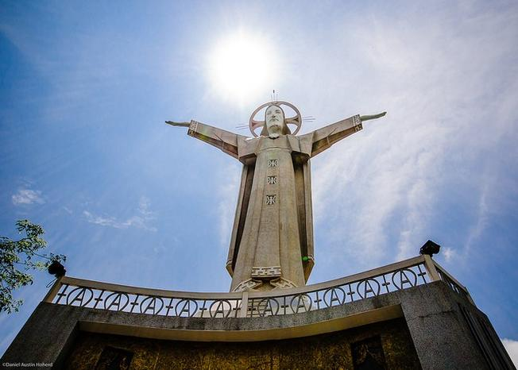
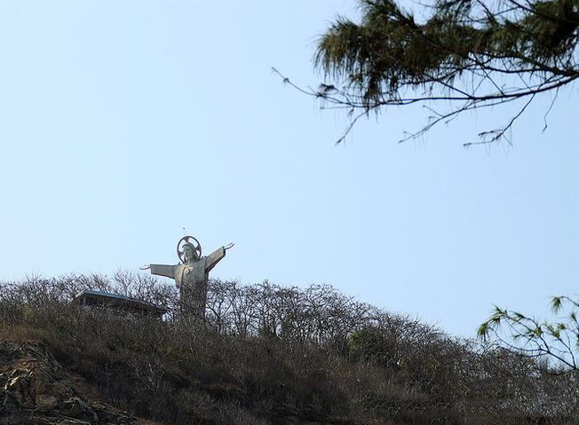
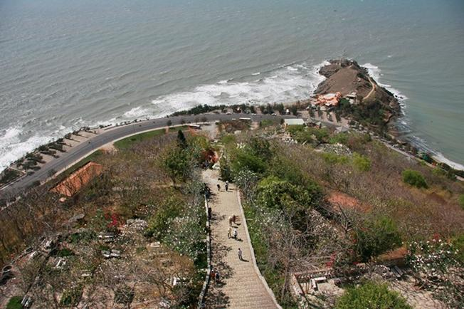
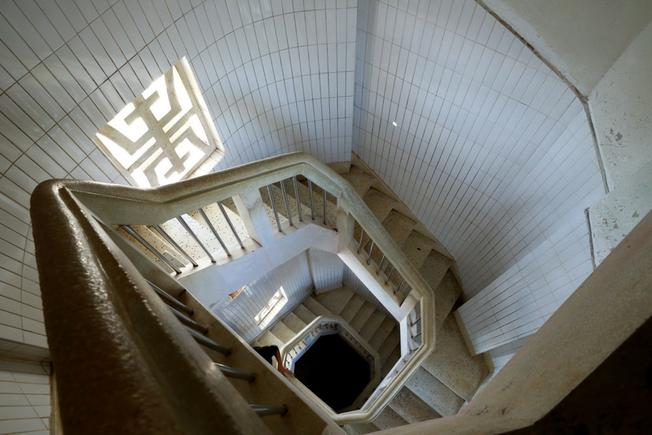
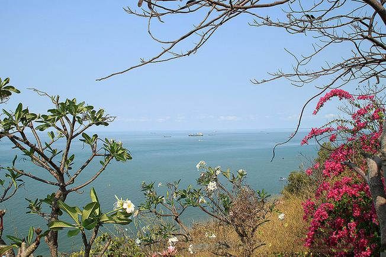
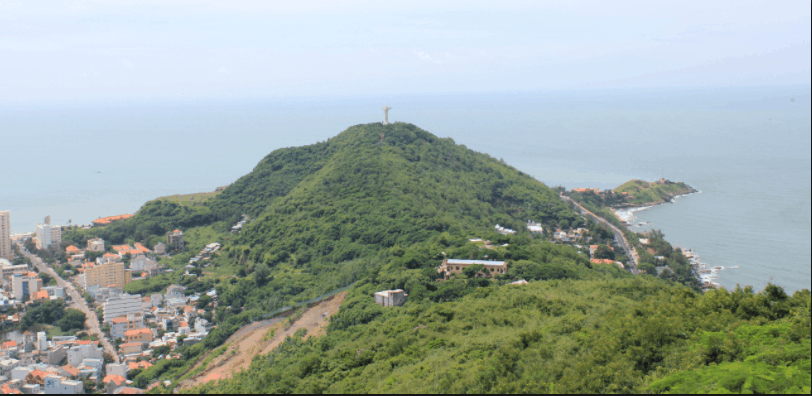
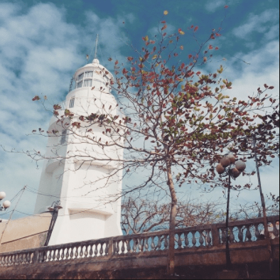

.jpg)
Khám phá tượng Chúa Kitô – địa điểm du lịch Vũng Tàu nổi tiếng
Tượng Chúa Kito là một trong những địa điểm tham quan Vũng Tàu nổi tiếng, không thể thiếu trong hành trình của du khách khi du lịch Vũng Tàu, bởi cảm giác chinh phục đầy thú vị tại phố biển sôi động này.
Địa chỉ: Nằm ở Thùy Vân, Phường 2, thành phố Vũng Tàu, Bà Rịa – Vũng Tàu
Giờ mở cửa: 07h00 sáng – 17h00 chiều
-
Đường lên tượng chúa Kitô ở Vũng Tàu
- Xe máy, ô tô riêng
Đây là hai loại phương tiện tự túc tiện lợi nhất, các bạn có thể di chuyển vào lúc nào, đi ở đâu, dừng ở đâu tuỳ theo bạn muốn. Để đi từ Sài Gòn đến Vũng Tàu, bạn có 2 cung đường để lựa chọn: đi qua phà Cát Lái sang Nhơn Trạch, đi hướng quốc lộ 51. Nếu đi xe máy, bạn nên chọn đường đi phà Cát Lái vì đường dễ tìm, lại ít ô tô lớn đi sẽ an toàn hơn. Còn đi ô tô riêng, bạn nên đi đường cao tốc Long Thành – Đồng Nai sẽ nhanh hơn
- Xe khách
Đây là loại phương tiện được nhiều hành khách lựa chọn nhất. Bạn có thể bắt xe tại bến xe miền Đông, Sài Gòn đi đến bến xe khách Vũng Tàu. Thời gian di chuyển khoảng 2,5 tiếng, giá vé khoảng 80.000 đồng – 160.000 đồng/ vé tuỳ từng hãng xe. Có một số hãng xe uy tín, chất lượng đến Vũng Tàu như: Phương Trang, Thiên Phú, Rạng Đông, Hoa Mai…
- Tàu cánh ngầm
Đây là phương tiện di chuyển nhanh nhất, chỉ mất khoảng 1,5 tiếng di chuyển. Nhưng chi phí di chuyển cũng đắt nhất, giá vé khoảng 200.000 đồng/ vé. Bạn có thể mua vé và di chuyển ở bến Bạch Đằng, thành phố Hồ Chí Minh đến bến Cầu Đá, thành phố Vũng Tàu. Có một số hãng tàu mà bạn có thể lựa chọn như: Green Lines, Vina Express,…
Bia đá ghi tên địa điểm ngoài cổng (ảnh ST)
- Xe máy, ô tô riêng
-
Kiến trúc tượng chúa Kitô Vũng Tàu
Tượng Chúa Kito hay còn gọi là tượng Chúa dang tay, là một trong những điểm tham quan Vũng Tàu nổi tiếng được rất nhiều du khách ghé thăm. Nằm trên đỉnh núi Nhỏ, thành phố Vũng Tàu, tượng được xây dựng vào năm 1974. Tượng Chúa Kito có chiều cao 32m, sải tay dài 18,3m đứng trên độ cao 170m, với hướng nhìn ra biển tuyệt đẹp, bên trong là 133 bậc thang lên tận 2 tay của tượng. Đứng ở đây, du khách có thể phóng tầm mắt ra xa, ngắm quang cảnh rộng lớn.
Tượng Chúa Kitô Vua – địa điểm tham quan Vũng Tàu thú vị cho nhiều du khách (Ảnh sưu tầm)
Tượng Chúa Kitô có thể được coi như phiên bản, có nét tương đồng với Tượng Chúa Kitô cao hơn 2m tại thành phố Rio de Janeiro của Brasil – một trong những bức tượng lớn nhất Châu Á.
Công trình đồ sộ ở địa điểm tham quan Vũng Tàu này khiến cho nhiều du khách muốn đến thành phố biển. Đến đây, bạn không chỉ được khám phá chinh phục mà còn có cơ hội thưởng ngoạn toàn cảnh thành phố từ trên cao.
Tượng chúa Giêsu Vũng Tàu (Ảnh sưu tầm)
Trên đỉnh ngọn núi Nhỏ, tượng Chúa Kitô cao sừng sững, vững chãi với hai cánh tay dang rộng như nâng đỡ con người. Bề mặt tượng hướng ra biển vẻ đầy hiền hòa, bao dung như đang che chở bao bọc chúng sinh.
Dù chỉ là bức tượng được xây nên từ bê tông cốt thép, nhưng những chi tiết thuộc về thẩm mỹ và nghệ thuật như tư thế đứng, nét mặt, thần thái, trang phục… đều được thể hiện hết sức sinh động, mềm mại và đầy sức sáng tạo.
Để lên được đến đỉnh chiêm ngưỡng tượng Chúa Kitô tịa địa điểm du lịch này, du khách phải vượt qua gần 800 bậc thang, hai bên đầy hoa và rợp bóng cây. Đây được coi như một thử thách ngọt ngào dành cho những du khách mộ đạo và muốn khám phá cảnh đẹp.
Đường lên tượng Chúa như một thử thách cho những ai muốn chinh phục (Ảnh sưu tầm)
Nếu mỏi chân, du khách có thể ngồi nghỉ ngơi trên những chiếc ghế đá và trạm dừng chân dọc đường lên tượng Chúa. Nếu nghỉ tại trạm dừng chân, khách tham quan còn được tận hưởng không khí mát lành cùng muôn hoa khoe sắc, nhìn lên bức tượng hùng vĩ, nhìn ra hướng biển với những con sóng xô bờ, con thuyền nhấp nhô trên biển cả lênh đênh.
Chỉ đơn giản là vậy thôi, nhưng hành trình của điểm đến Vũng Tàu này cùng mang lại cho mỗi người khi đặt chân đến nơi đây, một cảm xúc riêng, rất tuyệt vời.
Bước chân đến đỉnh của địa điểm du lịch này, du khách sẽ được chiêm ngưỡng một công trình kiến trúc độc đáo. Tượng Chúa được đứng trên nền bệ bê tông hình cánh cung cao 10m, với bức họa phù điêu “Bữa tiệc ly” ở phía trước và “Đức Chúa trao chìa khóa cho Phêrô” ở mặt sau.
Cầu thang xoắn ốc đi từ chân tượng lên đến đỉnh tượng (Ảnh sưu tầm)
Bước tiếp lên 133 bậc cầu thang xoắn ốc bên trong địa điểm tham quan Vũng Tàu. Đứng trên vai Chúa, bạn hãy nhắm mắt lại, thành tâm nguyện cầu những điều bình an, tốt lành. Tương truyền rằng, mọi điều ước của bạn đều trở thành hiện thực. Sau đó, bạn hãy từ từ mở mắt để chiêm ngưỡng thiên nhiên tươi đẹp của phố biển, tận hưởng làn gió thổi lồng lộng.
Quang cảnh tuyệt đẹp khi đứng từ trên đỉnh tượng Chúa chiêm ngưỡng (Ảnh sưu tầm)
-
Những địa điểm gần tượng chúa Kitô Vũng Tàu
- Núi Nhỏ
Tượng chúa Kitô nằm trên núi Nhỏ Vũng Tàu, vì vậy nếu đến tham quan tượng chúa Kitô mà không dành chút thời gian để khám phá núi Nhỏ thì quả là đáng tiếc. Núi Nhỏ nằm sát bờ biển, dưới chân núi có nhiều con đường ven biển với hệ thống nhà hàng, khách sạn, quán cafe hiện đại, sang trọng. Núi nhỏ có hai đỉnh, đỉnh cao hơn có ngọn hải đăng toả sáng một vùng trời, đỉnh thấp hơn có tượng chúa Kitô
Nhìn từ trên cao thấy tượng chúa Kitô trên đỉnh núi Nhỏ (ảnh ST)
- Ngọn hải đăng
Hải đăng Vũng Tàu toạ lạc trên đỉnh núi Nhỏ, được người Pháp xây dựng nhằm mục đích chỉ đường, báo hiệu cho các tàu thuyền qua lại và nằm ở độ cao 149m so với mực nước biển. Hải Đăng Vũng Tàu được đánh giá là một trong những hải đăng cổ xưa nhất Việt Nam và Đông Nam Á. Bên trong ngọn hải đăng có cầu thang dẫn đến gần đỉnh hải đăng và có ban công để ngắm cảnh
Ngọn hải đăng Vũng Tàu (ảnh ST)
Nơi du lịch ở Vũng Tàu hấp dẫn này hứa hẹn sẽ mang đến cho du khách những cảm giác không thể nào quên. Địa điểm du lịch này như một món quà ý nghĩa dành cho du khách sau một chặng đường cả ngàn bậc thang thử thách.
- Núi Nhỏ